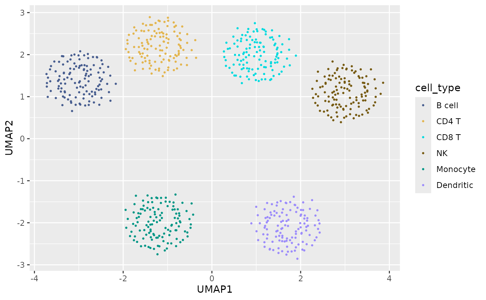
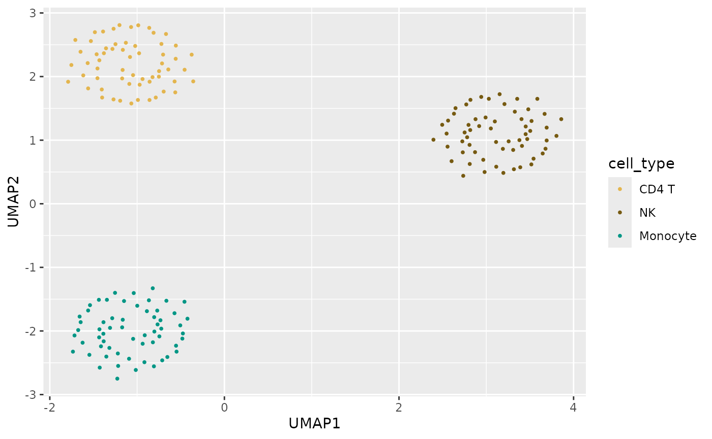
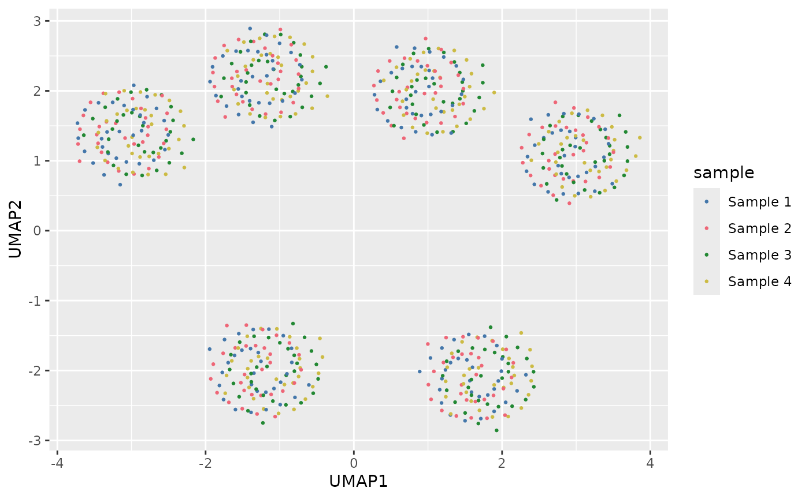
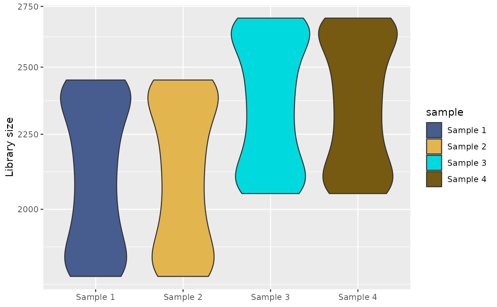
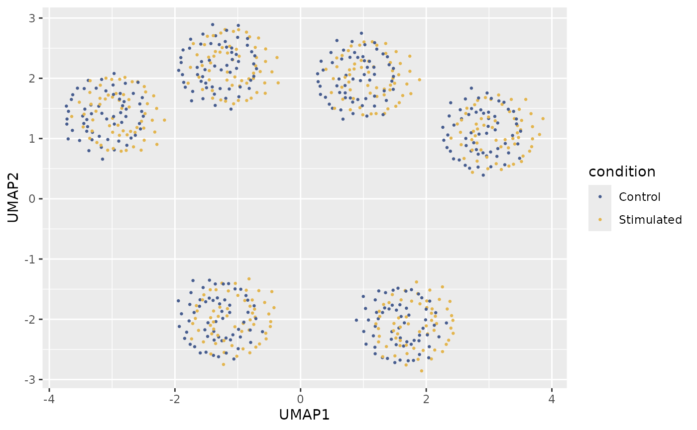
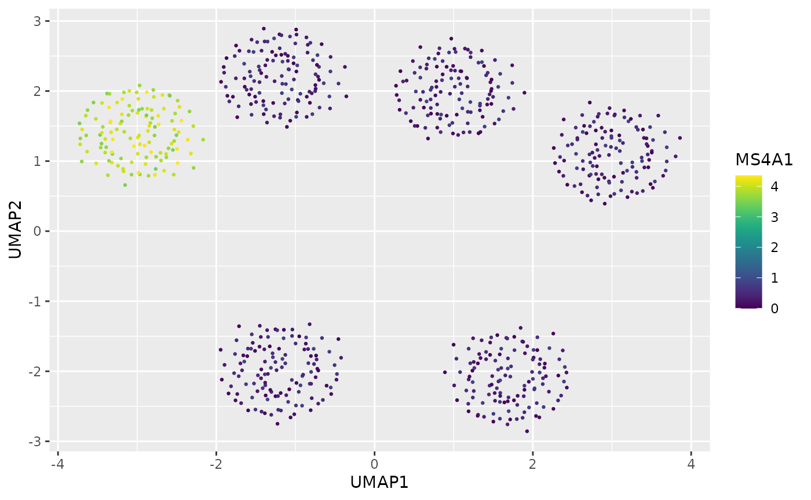
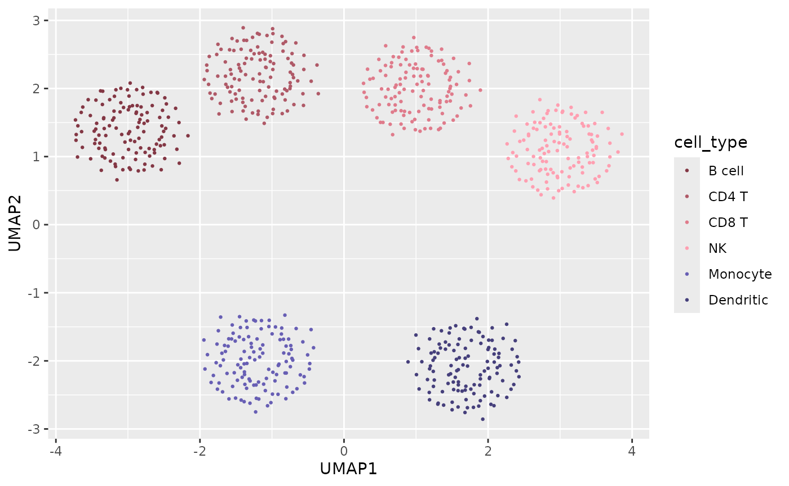
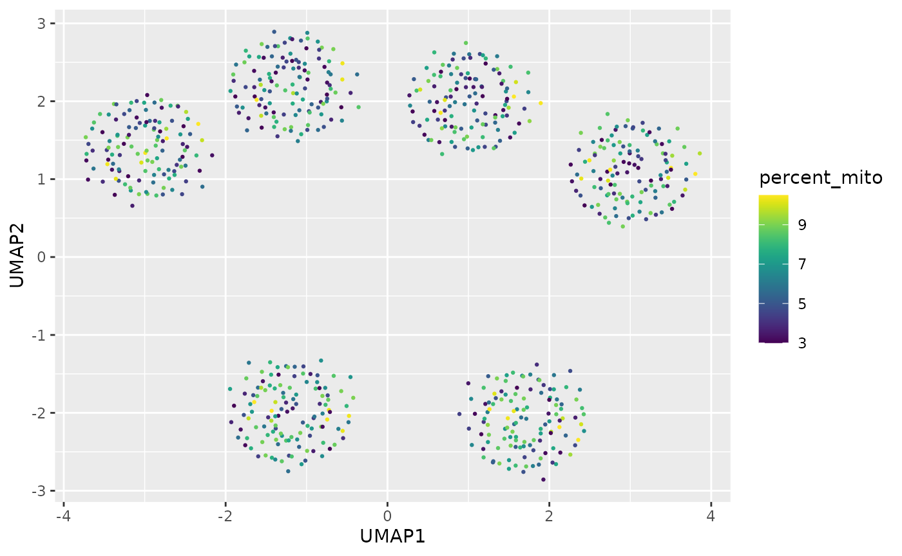

library(scChromatic)
library(ggplot2)
data(sc_example)Palette discovery
The registry separates palette type, intended use, provenance, capacity, and status.
head(sc_palette_names(type = "qualitative"))## [1] "okabe_ito" "tol_bright" "tol_vibrant"
## [4] "tol_muted" "tol_medium_contrast" "glasbey32"
sc_palette_info("chromatic")## palette_id source source_palette palette_type max_n
## 9 chromatic scChromatic chromatic qualitative 40
## intended_use recommended_geometry
## 9 cell_identity,sample,lineage,heatmap_annotation point,fill,line
## recommended_background status
## 9 light,dark recommended
## source_order
## 9 deterministically regenerated by data-raw/generate-owned-palettes.R
## priority_order
## 9 frozen nested maximin order; each prefix is stable
## source_url source_version source_commit
## 9 https://github.com/xie186/scChromatic <NA> <NA>
## source_sha256 citation license derived
## 9 <NA> scChromatic package authors GPL (>= 3) TRUE
## source_cvd_claim
## 9 Perceptually optimized and audited; no universal CVD-safety claim.
## notes
## 9 Frozen nested maximin sequence generated in HCL with normal/CVD diagnostics.
## audit_min_cie2000 audit_min_cie2000_deutan audit_min_cie2000_protan
## 9 6.44697 3.749774 3.879291
## audit_min_cie2000_tritan audit_min_contrast_light audit_min_contrast_dark
## 9 3.877646 1.736383 2.677194
## audit_n audit_basis
## 9 40 stored priority-order reference vector
## audit_method audit_date
## 9 CIEDE2000 via farver 2.1.2; CVD simulation via colorspace 2.1.3 2026-08-04
sc_palette_recommend(12, use = "cell_identity")## palette_id
## 4 chromatic
## 3 ditto40
## reason
## 4 qualitative; registered for this use; recommended; sufficient fixed capacity
## 3 qualitative; registered for this use; recommended; sufficient fixed capacity
## capacity status min_cie2000 score
## 4 40 recommended 10.877739 81.87774
## 3 40 recommended 2.000239 73.00024Raw colors are available as vectors, while sc_pal()
returns a scales-compatible closure.
sc_palette("chromatic", 6)## [1] "#475D8F" "#E3B54E" "#00DADF" "#765A11" "#009685" "#9C8CFB"
sc_pal("chromatic")(6)## [1] "#475D8F" "#E3B54E" "#00DADF" "#765A11" "#009685" "#9C8CFB"Example single-cell dataset
sc_example is deterministic and synthetic. Its columns
represent the color semantics commonly encountered in single-cell
figures.
dim(sc_example)## [1] 720 12
head(sc_example)## cell_id UMAP1 UMAP2 cell_type lineage sample condition MS4A1
## 1 cell_0001 -3.163181 1.418680 B cell Lymphoid Sample 1 Control 3.850
## 2 cell_0002 -3.086307 1.324727 B cell Lymphoid Sample 2 Control 3.899
## 3 cell_0003 -2.846043 1.502208 B cell Lymphoid Sample 3 Stimulated 4.145
## 4 cell_0004 -2.992542 1.337283 B cell Lymphoid Sample 4 Stimulated 4.189
## 5 cell_0005 -2.976398 1.365888 B cell Lymphoid Sample 1 Control 4.029
## 6 cell_0006 -3.212464 1.536336 B cell Lymphoid Sample 2 Control 4.065
## signed_score pseudotime percent_mito n_counts
## 1 -0.494 0.000 8.66 2279
## 2 -0.473 0.007 8.78 2257
## 3 1.341 0.013 8.87 2483
## 4 1.349 0.020 10.44 2460
## 5 -0.451 0.027 8.98 2185
## 6 -0.457 0.034 9.00 2160Persistent cell identities
cell_map <- sc_color_map(sc_example$cell_type, palette = "chromatic")
ggplot(sc_example, aes(UMAP1, UMAP2, color = cell_type)) +
geom_point(size = 0.5) +
scale_color_sc_map(cell_map)
The same map is reused after filtering, so the three retained identities keep their original colors.
stimulated <- subset(
sc_example,
condition == "Stimulated" & cell_type %in% c("CD4 T", "NK", "Monocyte")
)
ggplot(stimulated, aes(UMAP1, UMAP2, color = cell_type)) +
geom_point(size = 0.7) +
scale_color_sc_map(cell_map)
Samples and conditions
sample_map <- sc_color_map(sc_example$sample, palette = "chromatic")
ggplot(sc_example, aes(UMAP1, UMAP2, color = sample)) +
geom_point(size = 0.5) +
scale_color_sc_map(sample_map)
ggplot(sc_example, aes(UMAP1, UMAP2, color = condition)) +
geom_point(size = 0.5) +
scale_color_sc_d("chromatic")
Continuous expression
ggplot(sc_example, aes(UMAP1, UMAP2, color = MS4A1)) +
geom_point(size = 0.5) +
scale_color_sc_c("viridis")
Signed scores centered at zero
midpoint = 0 changes data rescaling, not merely the
middle displayed color.
ggplot(sc_example, aes(UMAP1, UMAP2, color = signed_score)) +
geom_point(size = 0.5) +
scale_color_sc_c("chromatic_balance", midpoint = 0)
Parent lineage and child subtype colors
lineage_map <- sc_hierarchy_map(sc_example$lineage, sc_example$cell_type)
ggplot(sc_example, aes(UMAP1, UMAP2, color = cell_type)) +
geom_point(size = 0.5) +
scale_color_sc_map(lineage_map)
Pseudotime and QC
ggplot(sc_example, aes(UMAP1, UMAP2, color = pseudotime)) +
geom_point(size = 0.5) +
scale_color_sc_c("cividis")
ggplot(sc_example, aes(UMAP1, UMAP2, color = percent_mito)) +
geom_point(size = 0.5) +
scale_color_sc_c("viridis")